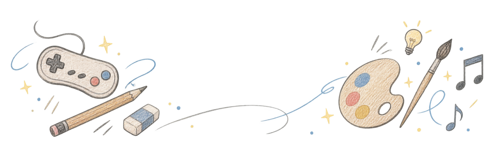

WORKS
つくったもの
気になるページから
check it out!
TOOLS
つくる人の道具箱
ツクール音声変換帳音声をまとめて、ogg と m4a に。端末内で変換・試聴・保存できます。
ABOUT THIS NOTE
気の向くままに、
ひとつずつ。
ジャンルにとらわれず、好きなものを好きなペースでつくっています。新しいページができたら、またここに追加します。

きまぐれに、いろいろ作ってます。
ゲームをつくったり、絵を描いたり、音を鳴らしたり。
ここは、そんな日々の創作を綴る小さな自由帳です。
WORKS
気になるページから
check it out!
TOOLS
ABOUT THIS NOTE
ジャンルにとらわれず、好きなものを好きなペースでつくっています。新しいページができたら、またここに追加します。